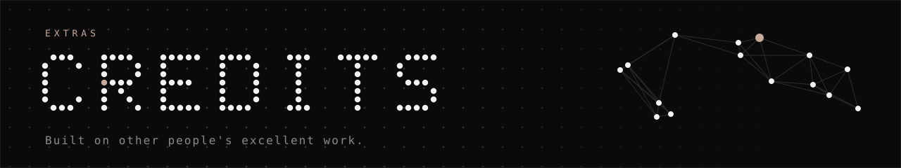

Credits and licences
Bento is a thin layer on top of other people's work. They did the hard part. Please support them.
komorebi and whkd
By LGUG2Z. An exceptional tiling window manager for Windows, and its hotkey daemon. Star it, sponsor it.
YASB
By AmN. The status bar everything here is built around. It is a remarkable project.
Windhawk
By Ramen Software and the mod authors, including m417z and m1lhaus, whose mods this setup leans on.
Tacky Borders
Animated window borders, by lukeyou05.
Rainmeter
The desktop customisation platform the Bento widget runs on.
AltSnap
Alt + drag to move and resize windows.
Scoop, fastfetch, AutoHotkey
The installer and the small tools around the edges.
Licences
Bento (the installer, the settings app, the configuration, the Rainmeter skin and the wallpapers) is released under the MIT licence. Use it, change it, share it.
The Geist and Geist Mono fonts bundled in the Rainmeter skin and the settings app are under the SIL Open Font License. The wallpapers are original artwork generated for this project.
Built with
The settings app is written in Rust with egui. Bento was made by its author with AI assistance (Claude Code), and run and tried on a real machine. Read the scripts before you run them.